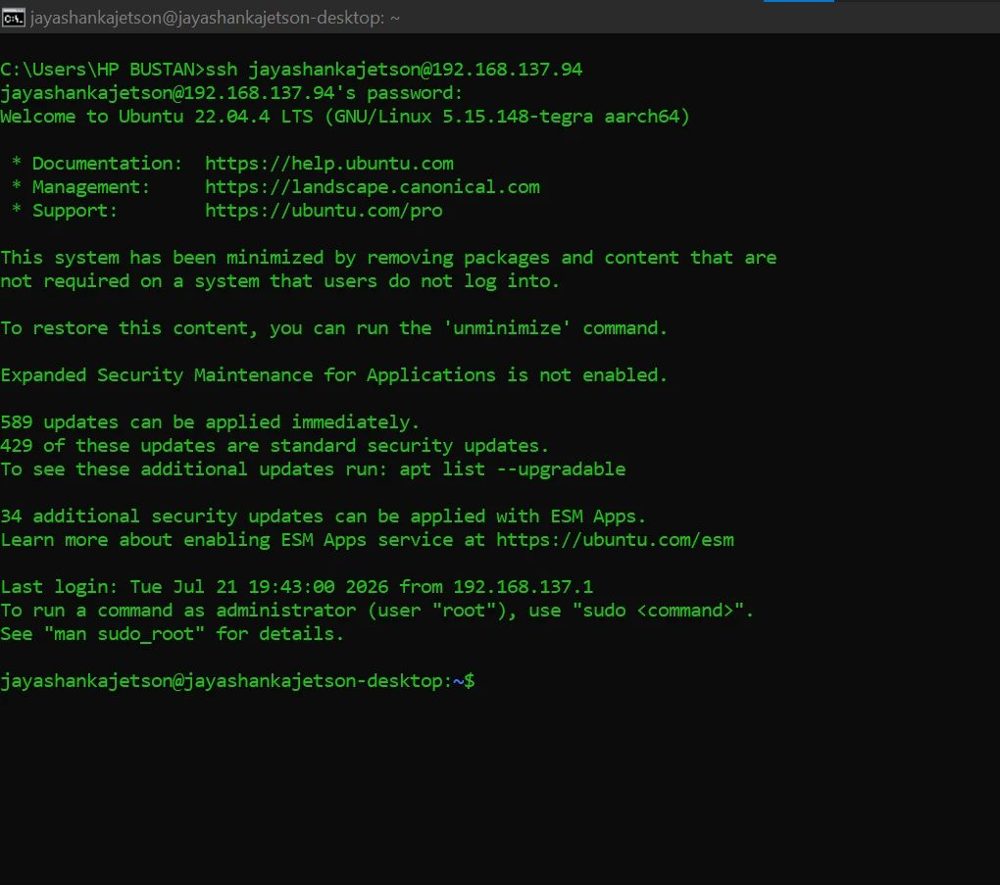
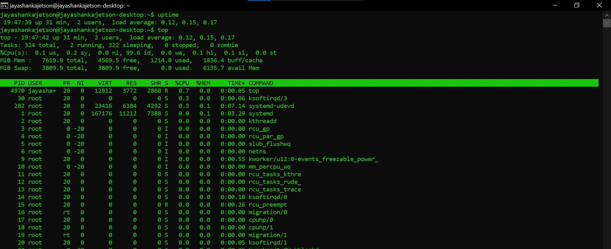
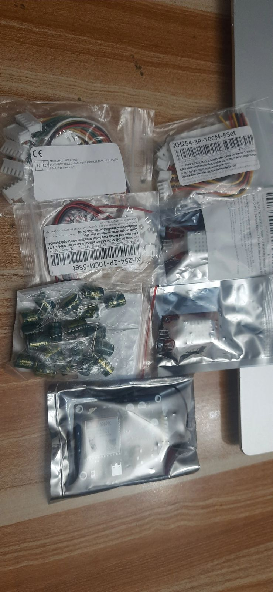
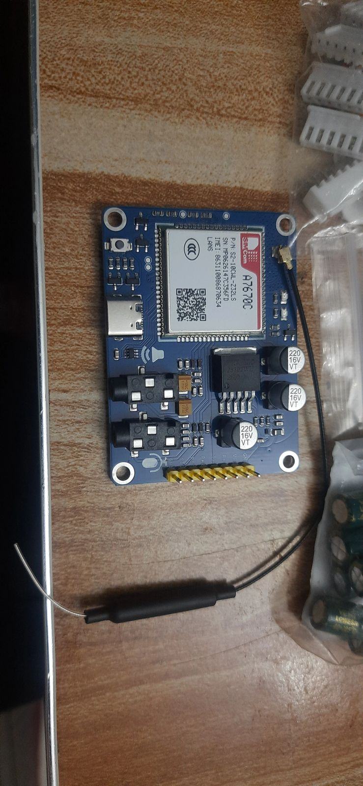
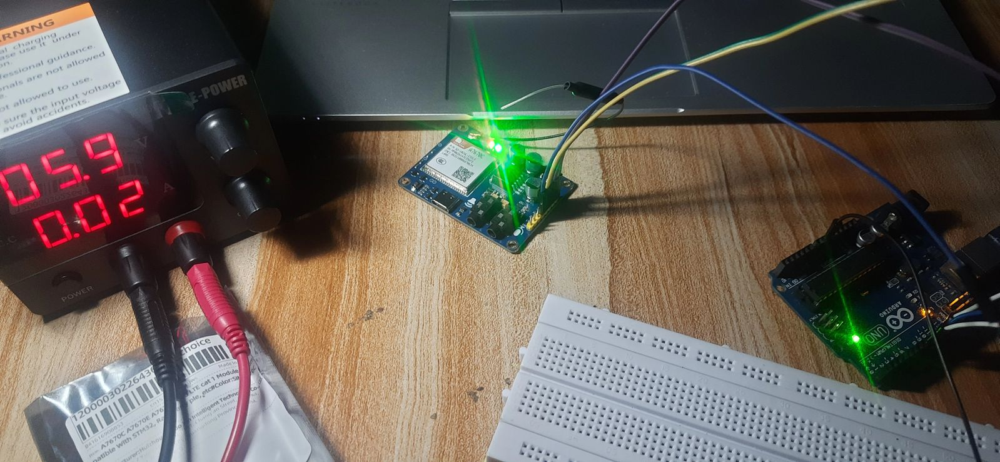
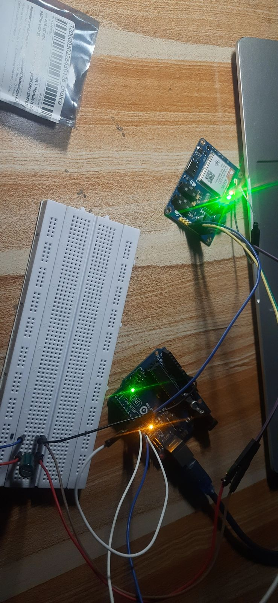

Jetson Reachable Over SSH — ROS Jazzy Installed
With the Jetson already flashed and configured with a user account in Week 05, this week it was connected to the laptop with an Ethernet cable and logged into remotely over SSH for the first time. ROS Jazzy — the software foundation the Week 02 architecture calls for on the AI/vision side — was installed on it directly from that SSH session.

A quick round of system checks confirmed the board was healthy before installing anything on top of it — disk space, memory, and live CPU load.

top before the ROS Jazzy install — memory and CPU load nominal, nothing competing for resources.Note: as flagged in Week 05, the board actually in hand is a Jetson Orin Nano 8GB Developer Kit rather than the Jetson Nano the documentation targets. The SD card had to be reflashed with a JetPack 6.1 image built for the Orin Nano before any of this setup would boot — that swap doesn't change anything about the ROS/Arduino architecture, just the flashing steps.
GSM Module A7670C Received
The replacement for the SIM800L — a SIMCom A7670C 4G/LTE Cat-1 module — arrived this week, along with the 1000µF capacitors (to buffer TX current spikes) and a set of JST connectors for cleaner wiring than loose jumper leads.


GSM Testing Begins
Testing started immediately: bench power supply, correct voltage, and a code snippet at a baud rate the module would actually respond to. The SIM800L troubleshooting earlier in the project made this faster — the same bench-testing approach (fixed voltage, watch for AT-command response before worrying about network registration) applied directly.


What Did Not Go Well
Nothing broke this week, which is itself notable after the SIM800L's dead-end and the earlier DIY-kit/PLA-chassis detours — but the A7670C testing is still at the "module responds to AT commands" stage, not yet at SMS-send or network registration. Getting the correct voltage and baud rate dialled in ate more time than expected, which pushed full bring-up into next week.
Week 06 Checklist
| Jetson reachable over SSH (Ethernet link) | ✓ Complete |
| ROS Jazzy installed on the Jetson | ✓ Complete |
| System health check (disk / memory / CPU) before install | ✓ Complete |
| A7670C GSM module, capacitors, and JST connectors received | ✓ Complete |
| A7670C bench-tested — powers on, responds to AT commands | ✓ Complete |
| A7670C SMS send / network registration test | ⏳ In Progress |